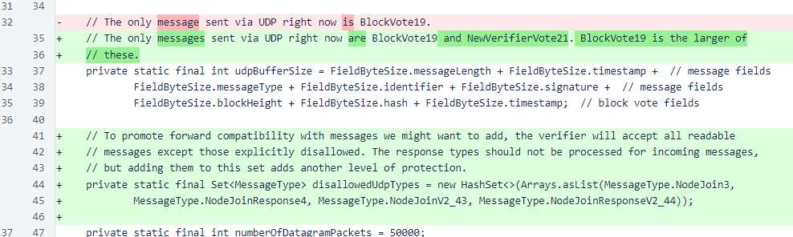
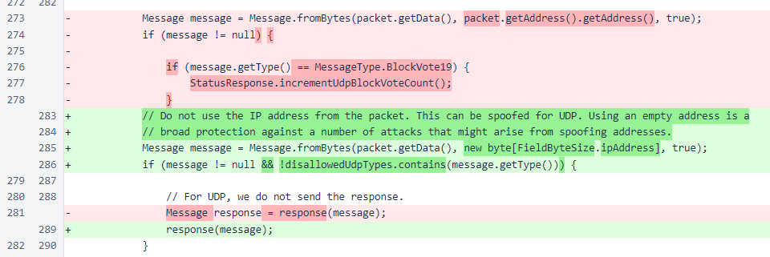
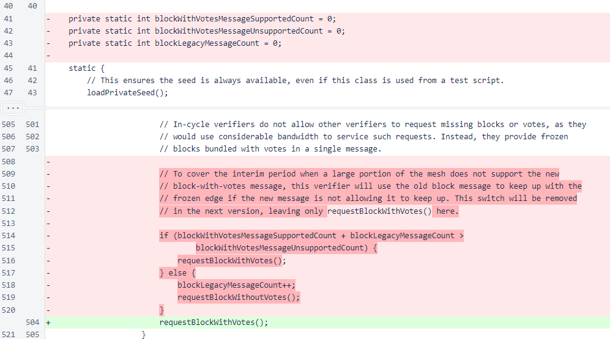
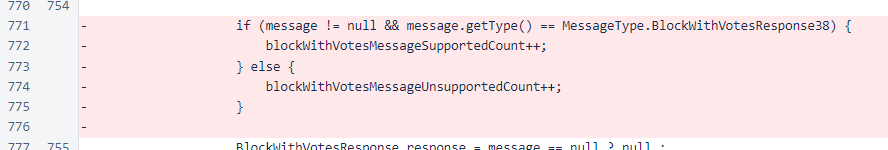
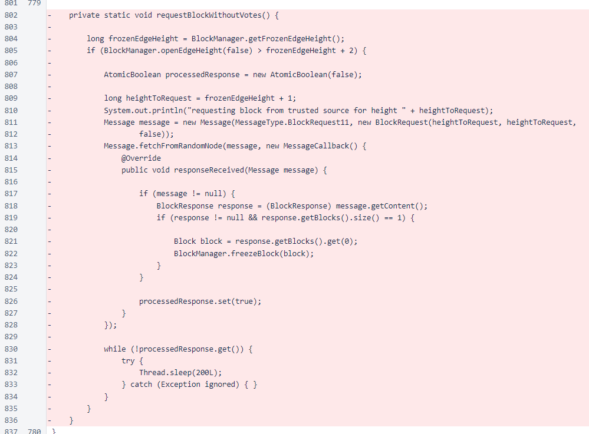
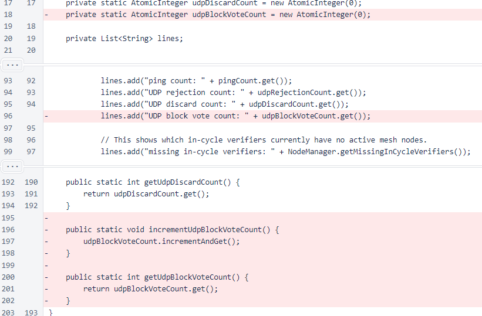

Nyzo version 514 (commit on GitHub) corrects a vulnerability related to node-join messages and UDP. It also contains several inconsequential changes to eliminate clutter in the code.
This version only affects the verifier. The sentinel does not accept incoming messages.
In MeshListener, a set has been defined for disallowed UDP types. While only node-join messages should ever require filtering, the response messages have also been added to this exclusion list for an extra level of protection. This filtering is necessary because UDP source IP addresses can be spoofed, which would allow an attacker to cause the NodeManager map to grow uncontrollably by sending node-join messages with many different source IP addresses. In a future version, a map-limiting protection similar to that found in NicknameManager will be implemented in NodeManager.
The method that processes incoming UDP messages now checks for excluded types. Also, the count of UDP block votes is no longer incremented, as UDP messaging has already been deployed successfully to most of the cycle and requires no further tracking.
In Verifier, all code relating to uncertain support of the block-with-votes message has been removed. This message was added in version 476, and its support in the cycle is 100%.
  In StatusResponse, the UDP-block-vote count has been removed. It is no longer needed and no longer used.
